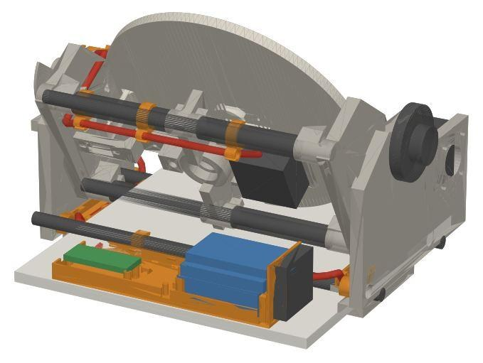

Jack Johnston
Mechanical engineering and mathematics student building precision hardware, CAD, and motion control systems — from multi-axis 3D printing mechanisms to medical device verification fixtures.
An engineer focused on practicality.
I design mechanical hardware with one standard: it has to survive physical assembly and real-world bench testing, not just look clean on a CAD screen. Whether I am tracking down a 0.5 mm clamping-collar tolerance or isolating an intermittent stepper driver fault, I prefer building early and building for functionality.
Across two summers with Johnson & Johnson MedTech in Quality and R&D Engineering, I worked hands-on with manufacturing and R&D teams to build, test, and standardize assembly workflows for next-generation cardiac catheters — including conceiving and building a rotating verification fixture submitted as invention disclosure INV2508037.
At Duke University (B.S. Mechanical Engineering, Minor in Mathematics, 3.8 GPA, Class of 2027), my work spans materials research, robotics and manipulator kinematics, CAD, and custom multi-axis electromechanical testbeds.
What I Do
Precision Mechanism Design
608 bearing preload stack-ups, clamping-collar mechanics, and support-free FDM design for manufacture in SolidWorks, Fusion 360, and Python.
Precision CAD
Precision 3D modeling for printed and machined parts, automated collision sweeps across full rotary ranges, and mesh-level dimensional audits.
Embedded Motion Control
Dual-MCU Klipper firmware, SKR mini E3 V2 with TMC2209 drivers, Raspberry Pi bench rigs, Arduino prototyping, and single-variable fault isolation.
Medical Device R&D & Quality
Design Verification (DVT), Lot Release, Installation Qualification, Minitab & Gage R&R, ISO 8 cleanroom procedures, and patentable fixture design (INV2508037).
Materials & Data Science
Python machine learning on multi-principal-element materials datasets at UC Irvine (Prof. Cao) and perovskite superfluorescence experiments at Duke.
Education & Leadership
Duke University B.S. Mechanical Engineering, Mathematics Minor (3.8 GPA, Dean’s List); OC Superior Courts Access to Justice creator.
3-D Printer 5-Axis Modular Upgrade

A bolt-on two-axis tilting and rotating print bed that converts a $300 Flashforge Adventurer 5M into a 3+2-axis printer with zero permanent printer modifications.
Engineered through six hardware revisions, automated Python + manifold3d collision audits, a dual-MCU Klipper motion stack (SKR mini E3 V2 + Forge-X), and a custom 5-axis G-code converter with skipped-step verification.